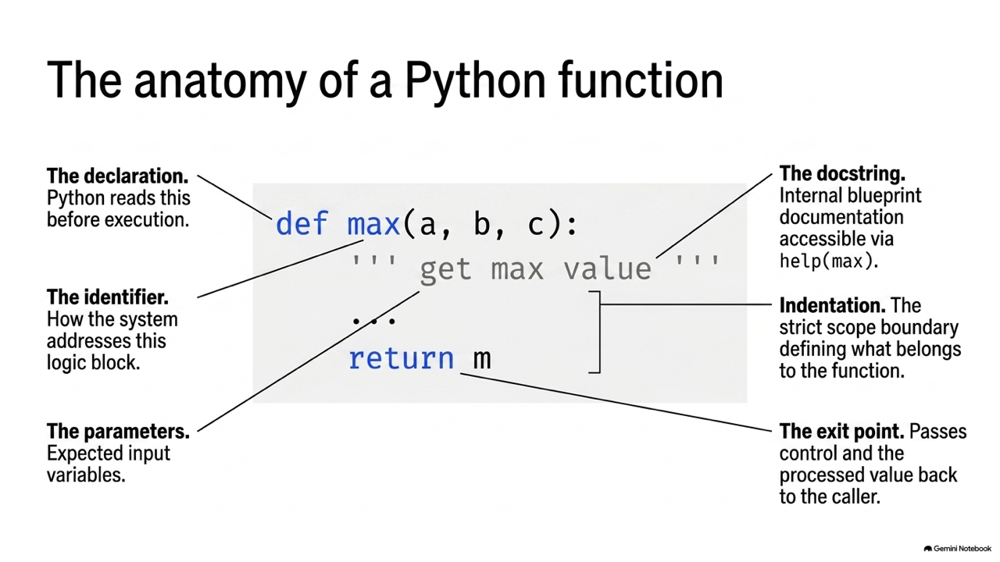
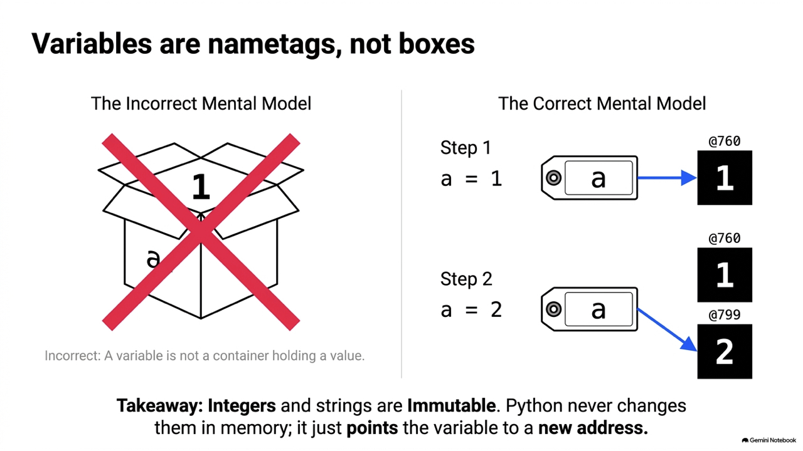
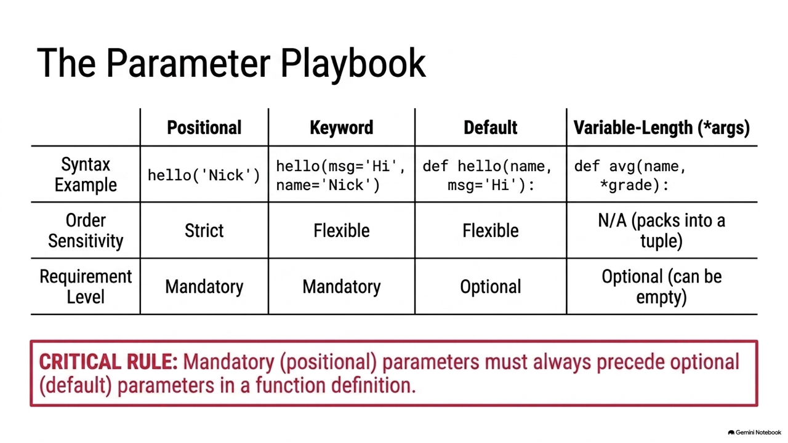
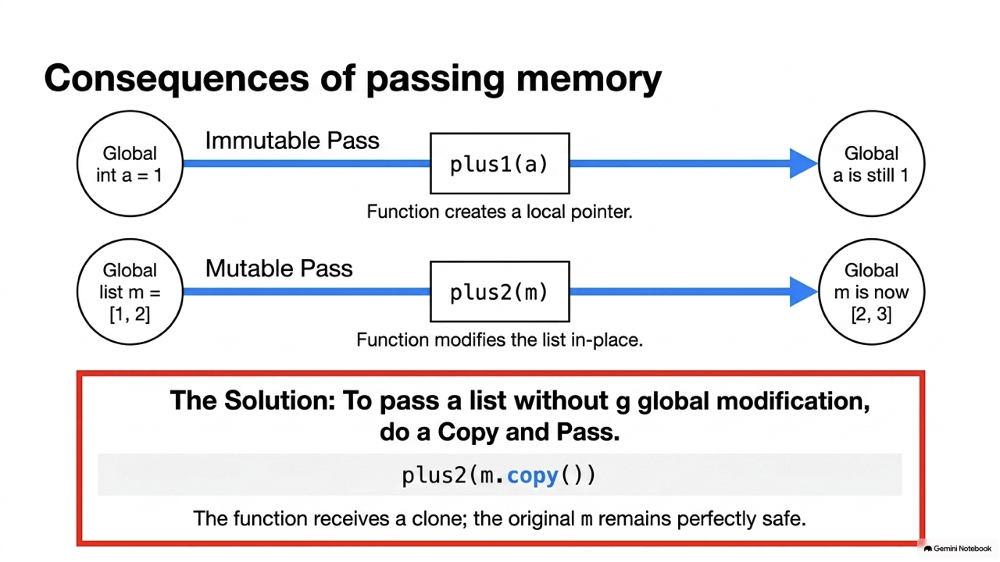
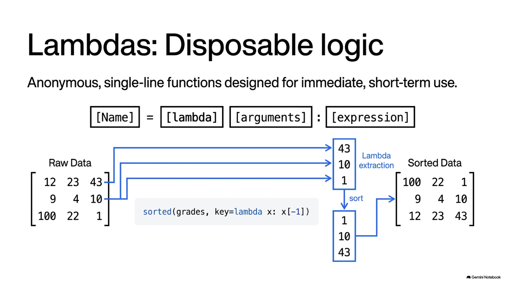
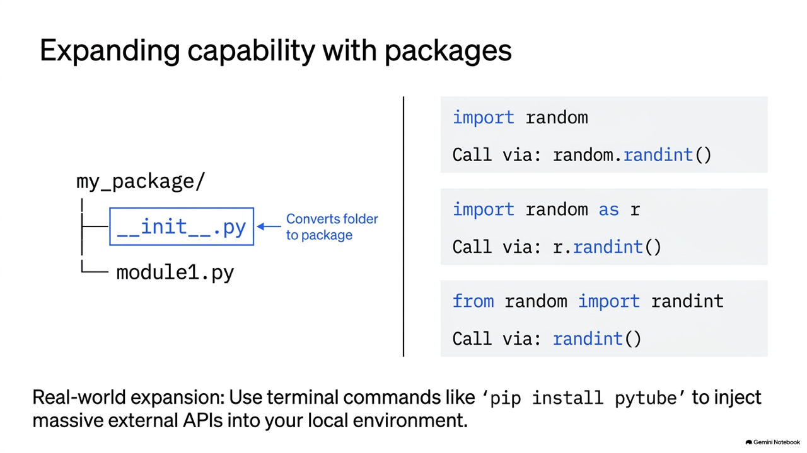
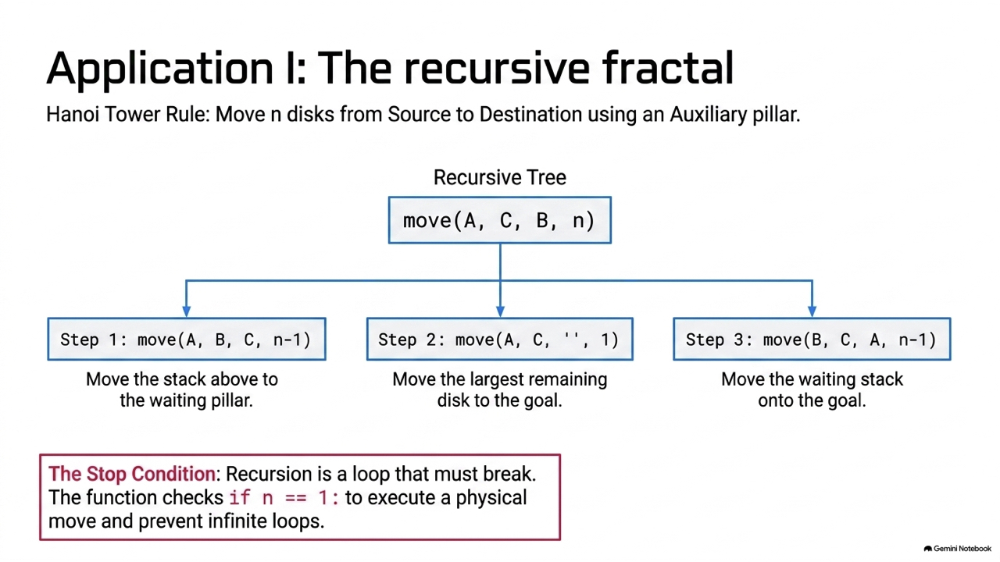
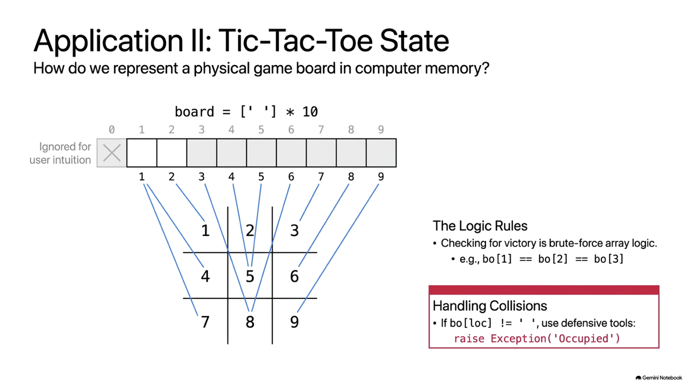
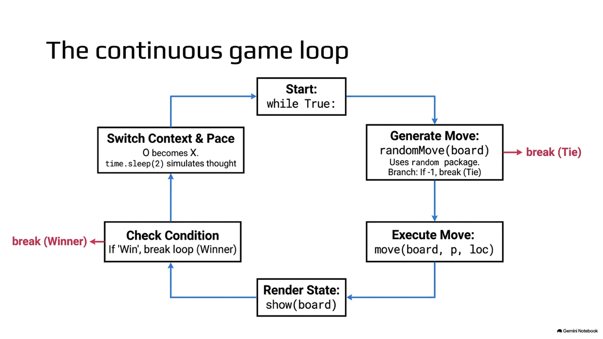

Prof. Nien-Lin Hsueh Department of Information Engineering Feng Chia University
/
*
*args
**kwargs

print()
len()
def
# 函式的定義 (包含一個參數 p) def hello2(p): print('Hello', p) # 呼叫 (Call) 函式並帶入引數 hello2("Java") # 輸出: Hello Java hello2("Python") # 輸出: Hello Python

return
docstring
def find_max(a, b, c): ''' 比較三個數並回傳最大值 ''' if (a > b): if (a > c): m = a else: m = c elif (b > c): m = b else: m = c return m # 回傳最大值 print(find_max(1, 2, 3)) # 3 help(find_max) # 讀取註解 (docstring)
weight / (tall^2)
def get_bmi(tall, weight): """ 基於傳入的身高與體重計算人體的 BMI 並回傳。 身高必須以公尺為單位，體重以公斤為單位。 """ bmi_value = weight / (tall * tall) return round(bmi_value, 2) bmi = get_bmi(1.72, 80) print(bmi) # 27.04
def hello1(name, msg): print("Hi, {}, {}".format(name, msg)) # 1. 依位置傳遞 hello1('Nick', 'Good morning') # 2. 依關鍵字傳遞 (指名 keyword=value) hello1(msg='Good morning', name='Nick') # 3. 順序相反但未指名 (將會印出 Hi, Good morning, Nick - 語意錯誤) hello1('Good morning', 'Nick')
def hello2(name, msg = "Hello"): print("Hi, {}, {}".format(name, msg)) hello2('Nick') # 使用預設值 -> Hi, Nick, Hello hello2('Nick', 'Good morning') # 覆蓋預設值 -> Hi, Nick, Good morning # def hello_err(msg = "Hello", name): # ERROR: 必要參數必須在預設參數前 # print(name, msg)
def example(pos_only, /, standard, *, kw_only): print(pos_only, standard, kw_only) example("pos", "standard", kw_only="kw") # 正確 # example(pos_only="pos", standard="std", kw_only="kw") # ERROR: pos_only 不能指名 # example("pos", "standard", "kw") # ERROR: kw_only 必須指名
|
# name 預期為 str，age 預期為 int 或 None，回傳 str def greet(name: str, age: int | None = None) -> str: if age is not None: return f"Hello {name}, you are {age} years old." return f"Hello {name}." print(greet("Nick", 20))
def avg(name, *grade): # grade 收集為 tuple total = sum(grade) print(f"Student: {name}, Avg: {total / len(grade) if grade else 0}") avg("Nick", 90, 80, 100) # grade 為 (90, 80, 100) def intro(name, **kwargs): # kwargs 收集為 dict print(f"Name: {name}, Detail: {kwargs}") intro("Albert", age=20, city="Taichung") # kwargs 為 {'age': 20, 'city': 'Taichung'}
給定函式定義 def func(a, b=5, c=10): print(a, b, c)。下列哪一個呼叫方式在 Python 中是無效的，會導致語法錯誤？
def func(a, b=5, c=10): print(a, b, c)
A. func(1)
func(1)
B. func(a=1, c=20)
func(a=1, c=20)
C. func(b=20, 30)
func(b=20, 30)
D. func(1, c=20, b=30)
func(1, c=20, b=30)
解析：
b=20
30
SyntaxError: positional argument follows keyword argument

def plus1(aNumber): aNumber += 1 a = 1 plus1(a) print(a) # 輸出: 1 (未受影響)
def plus2(aList): for i in range(len(aList)): aList[i] += 1 m = [1, 2] plus2(m) print(m) # 輸出: [2, 3] (原串列被修改)

def plus2(aList): for i in range(len(aList)): aList[i] += 1 m = [1, 2] plus2(m.copy()) # 傳入 m 的副本，不傷害原 m 的內容 print(m) # 輸出: [1, 2] (不受影響)
下列程式碼執行後，螢幕上會印出什麼結果？
def modify_values(a, b): a = a + 10 b.append(10) x = 5 y = [5] modify_values(x, y) print(x, y)
A. 5 [5]
5 [5]
B. 15 [5, 10]
15 [5, 10]
C. 5 [5, 10]
5 [5, 10]
D. 15 [5]
15 [5]
x = 5
a = a + 10
a
x
5
y = [5]
b.append(10)
y
[5, 10]
lambda
lambda 參數: 運算表達式
# 宣告一個簡單的加法 lambda add = lambda x, y: x + y print(add(5, 3)) # 8 # 與 map, filter 搭配使用 nums = [1, 2, 3, 4] squared = list(map(lambda x: x**2, nums)) print(squared) # [1, 4, 9, 16]

key=lambda
# [英文, 數學, 物理] grades = [[12, 23, 43], [9, 4, 10], [100, 22, 1]] # 依據物理成績排序 (比較 43, 10, 1) g1 = sorted(grades, key=lambda x: x[-1]) print("依物理排序:", g1) # [ [100,22,1], [9,4,10], [12,23,43] ] # 依據加權總分 (英文*0.3 + 數學*0.4 + 物理*0.4) 排序 g2 = sorted(grades, key=lambda x: x[0]*0.3 + x[1]*0.4 + x[2]*0.4)
下列程式碼執行後，其輸出結果為何？
nums = [1, 2, 3, 4] squared_evens = list(map( lambda x: x**2, filter(lambda x: x % 2 == 0, nums) )) print(squared_evens)
A. [1, 4, 9, 16]
[1, 4, 9, 16]
B. [4, 16]
[4, 16]
C. [1, 9]
[1, 9]
D. [2, 4]
[2, 4]
filter(lambda x: x % 2 == 0, nums)
map(lambda x: x**2, ...)
2^2 = 4
4^2 = 16
list()
try-except-else-finally
try: # 可能引發異常的程式碼 num = int(input("請輸入一個數字: ")) result = 10 / num except ValueError: print("輸入格式錯誤，請輸入整數！") except ZeroDivisionError: print("除數不能為 0！")
else
finally
try: f = open('data/non_existent.txt', 'r') line = f.readline() except FileNotFoundError: print("找不到指定的檔案！") else: print(line) f.close() finally: print("檔案流程處理結束。")
raise
def set_age(age): if age < 0 or age > 150: # 主動拋出值錯誤例外 raise ValueError("年齡必須介於 0 至 150 之間！") print(f"年齡設定成功：{age}") try: set_age(-5) except ValueError as e: print("補獲錯誤:", e) # 輸出: 補獲錯誤: 年齡必須介於 0 至 150 之間！
下列程式碼執行後，最後在螢幕上會印出什麼結果？
def test_div(a, b): try: return a / b except ZeroDivisionError: return "Cannot divide by zero" finally: return "Always executed" print(test_div(10, 2))
A. 5.0
5.0
B. Cannot divide by zero
Cannot divide by zero
C. Always executed
Always executed
D. 5.0 且換行印出 Always executed
test_div(10, 2)
return "Always executed"

__init__.py
# 1. 匯入整個套件模組 import time print(time.time()) # 2. 僅匯入模組內特定函數 (呼叫時不用加模組名稱字首) from math import sqrt print(sqrt(9)) # 3.0 # 3. 給予別名簡化呼叫 import json as js data = js.loads('{"value": 100}')

def hanoi(n, start, temp, end): if n == 1: print(f"把盤子 1 從 {start} 搬移到 {end}") else: # 1. 將上面 n-1 個盤子從起始柱搬到輔助柱 hanoi(n - 1, start, end, temp) # 2. 將底層第 n 個盤子從起始柱搬到目標柱 print(f"把盤子 {n} 從 {start} 搬移到 {end}") # 3. 將輔助柱上的 n-1 個盤子搬到目標柱 hanoi(n - 1, temp, start, end) hanoi(3, 'A', 'B', 'C') # 搬移 3 個盤子需 7 步


# 初始化棋盤 board = [str(i) for i in range(1, 10)] def check_win(player): # 八種勝負連線情況 win_cond = [ [0,1,2], [3,4,5], [6,7,8], # 橫 [0,3,6], [1,4,7], [2,5,8], # 直 [0,4,8], [2,4,6] # 斜 ] for c in win_cond: if board[c[0]] == board[c[1]] == board[c[2]] == player: return True return False
pytubefix
# 使用 pip install pytubefix 安裝套件 from pytubefix import YouTube try: url = 'https://youtu.be/KOdfpbnWLVo' yt = YouTube(url) print("影片標題:", yt.title) # 取得最高畫質的影片串流並下載 stream = yt.streams.get_highest_resolution() stream.download(output_path='output/') print("下載完成！") except Exception as e: print("下載出錯:", e)